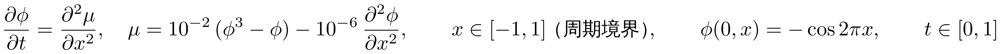
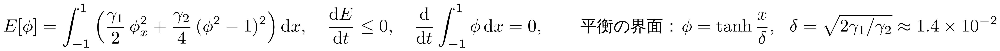
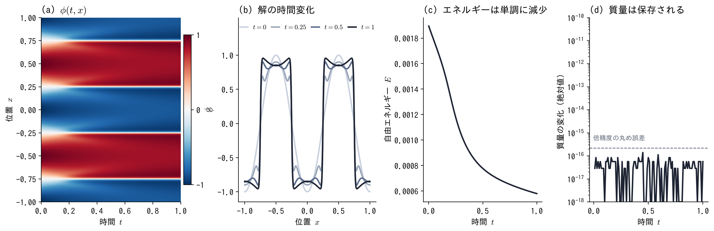

進捗：Cahn–Hilliard 方程式を数値計算で解いた



- 定数：γ1 = 10−6 が界面の厚さ，γ2 = 10−2 が相の分かれる強さを決める．空間 4 階で硬いので，φ と μ の 2 本に分けた混合形で書く
- 解き方：Fourier スペクトル法（1024 モード）＋ 指数時間差分法 ETDRK4（Δt = 10−5）
- 確認：Δt を 2 倍で差 6.2 × 10−12，モード数を半分で差 7.5 × 10−9．E は毎ステップ減少（1.9 × 10−3 → 5.8 × 10−4）
- 質量の変化は 1.4 × 10−16 以下（丸め誤差だけ）．AC と違い，相の量を保ったまま界面が鋭くなる